S08#
Avtor: Debora Kociper
Datum izdelave: 2024-05-24
Koda seminarja: S08
Vhodni podatek#
Povezava do datoteke z vhodnim podatkom: S08
Rezultati analiz#
Ime in izvorni organizem proteina#
Najprej sem naredila poravnavo nukleotidnega zaporedja vhodnega podatka z zaporedjem plazmida pUC57 z Clustal Omega za določitev regije MCS. 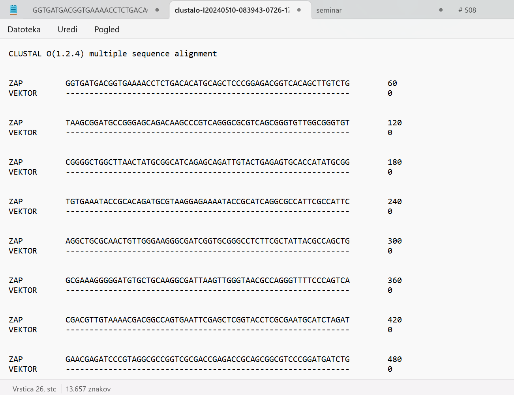
Del nukleotidnega zaporedja (vključno z MCS) sem vstavila v blast x , a z iskanjem po ‘non-redundant’ zbirki v blast x nisem dobila 100 % ujemanja, zato sem poskusila še z iskanjem po metagenomski zbirki.
 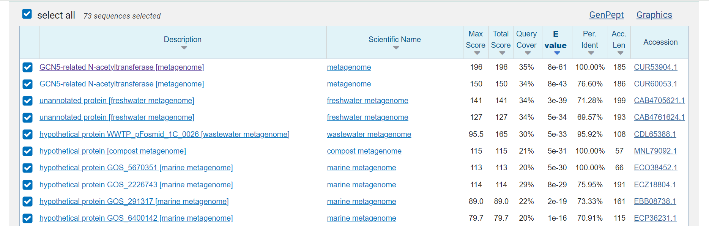
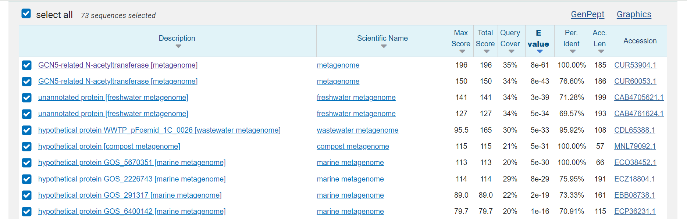Z iskanjem po metagenomski zbirki sem dobila 100 % ujemanje s sledečim metagenomom:
GCN5-related N-acetyltransferase [metagenome]
CUR53904.1 GCN5-related N-acetyltransferase [metagenome] MTSPGPTADVSVRIAWADDARGIAEVQVAAWRTAYADLLPPEELAAFDVDAFAKGWHASLTRPQDARNRV LVALERNRIVGFAITSPGSDPDCDPVADGEVSDFTVLPLEQRKGHGSRLQQAVVDTLAADRFTRALTWVN SSDDVLRTFFGDAGWAPDQAHRELDLYGDGSVTVKQVRLHTAIDG
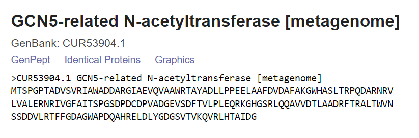
Izvorni organizem proteina: Nocardioides sp.
Pri nadaljnem iskanju z dobljenim metagenomom v blast p nisem dobila nobenih zadetkov (v nadaljevanju) niti po zbirki nr, niti po swissprotu, zato sem najprej iskala z dobljenimi zadetki pri prvotnem iskanju v blast x z nukleotidnim zaporedjempo zbirki nr (v tem primeru ujemanje ni bilo 100 %, ampak pri iskanju z ak-zaporedjem metagenoma v nobeni zbirki ni bilo nobenega zadetka).
Dobljeno metagenomsko zaporedje pri iskanju z blastx po metagenomski zbirki sem vstavila v blast p in iskala po swissprotu za iskanje podobnih proteinov. Ker nisem dobila zadetkov sem poskusila še z iskanjem po zbirki nr. Pri iskanju z nr sem dobila enake rezultate kot pri prvotnem iskanju z nukleotidnim zaporedjem v blastx po zbirki nr.
S prvimi šestimi zaporedji, ki sem jih vstavila v blastp z iskanjem po zbirki swissprot nisem dobila nobenega zadetka, pri sedmem zaporedju pa sem dobila dva rezultata. Človeški protein Q9H0A0 in mišji protein Q8K224, RNA citidin acetiltransferazi, na podlagi katerih sem določila sledeče lastnosti. 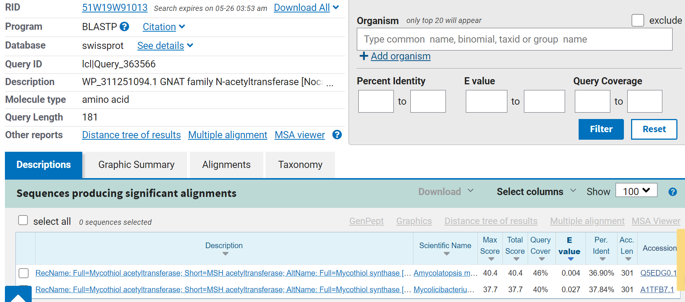
Ak-zaporedja dobljenih proteinov sem nato vstavila v blastp in z iskanjem po zbirki swissprot našla podobne proteine, s katerimi sem določila sledeče lastnosti proteina.
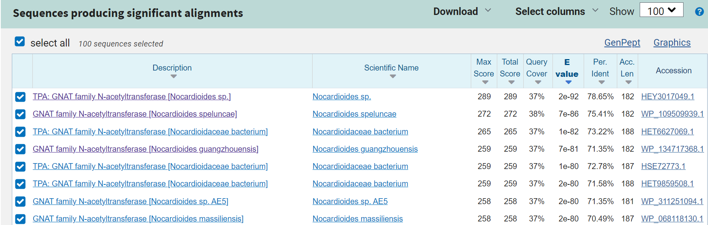 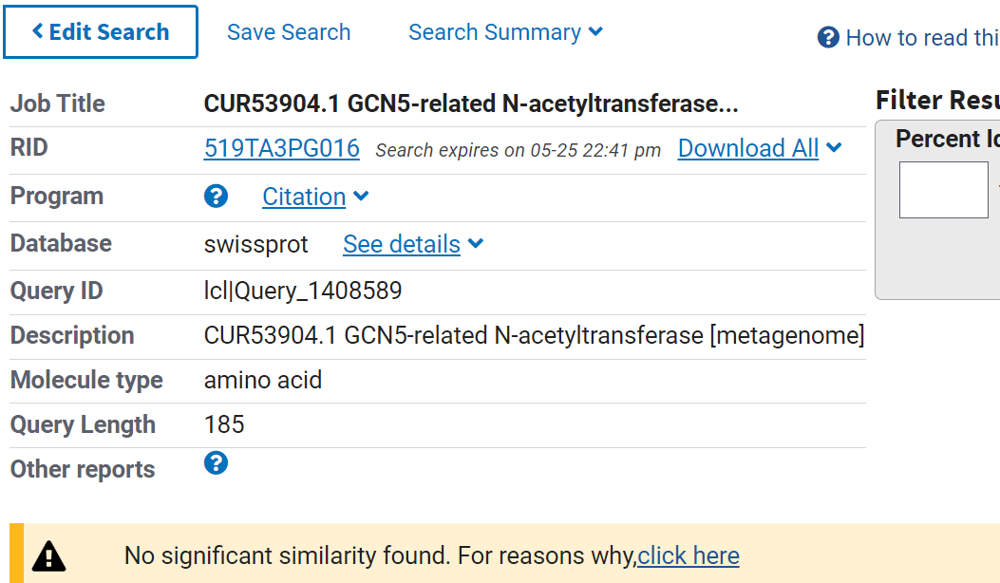 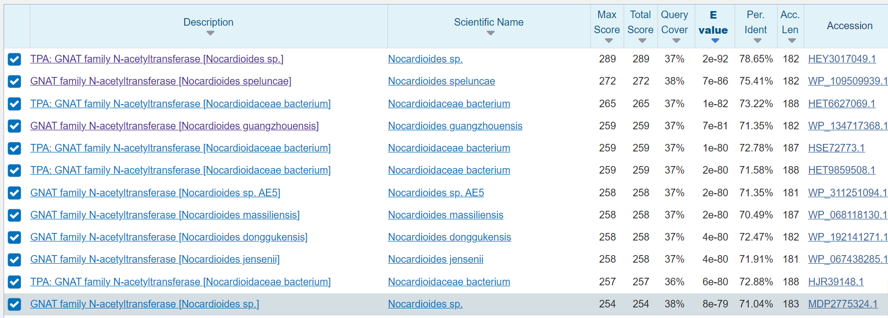
Ime proteina: RNA cytidine acetyltransferase (Q9H0A0)
Izvorni organizem: Homo sapiens
Lastnosti proteina#
Lokacijo, domensko zgradbo, velikost in funkcijo proteina ter post-translacijske modifikacije sem določila na podlagi proteina, ki je bil najbolj podoben metagenomu (tj. proteina Q9H0A0 in Q8K224).
Lokalizacija#
Lokacija: jedrce (jedro) 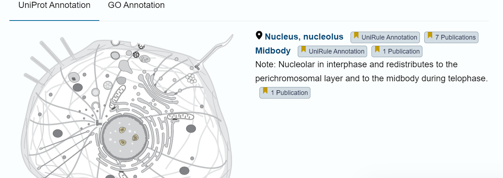 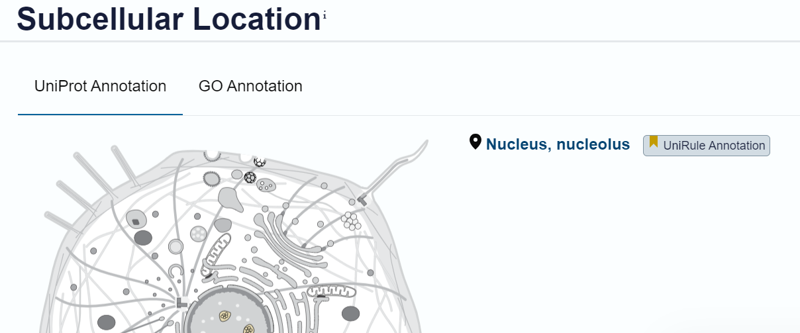
Velikost proteina#
Velikost metagenoma: 185 ak-ostankov.
Velikost podobnih proteinov RNA citidini acetiltransferaze: Q9H0A0: 1025 ak-ostankov 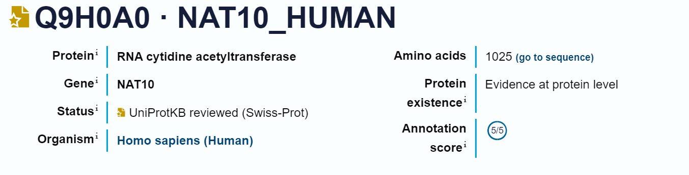 in Q8K224: 1024 ak-ostankov. 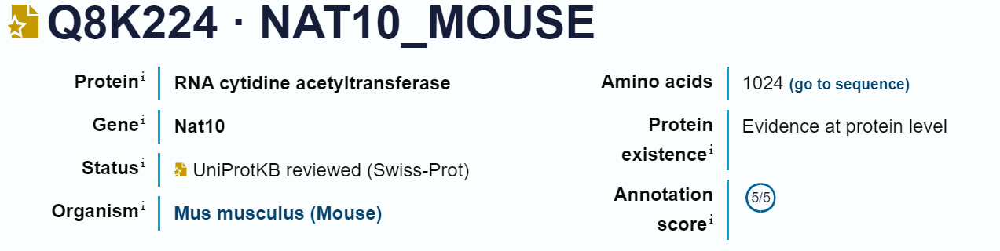
Domenska zgradba#
Obe RNA citidin acetiltransferazi (človeška Q9H0A0 in mišja Q8K224) imata eno samo domeno: N-acetiltransferazna domena (pri obeh 558-753). 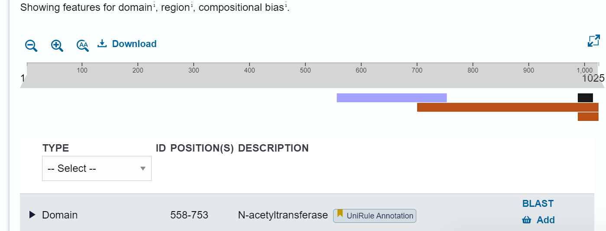
Post-translacijske modifikacije#
Q9H0A0 ima modificirane ostanke na mestih 67, 223, 426, 435, 593, 666, 672, 686, 716, 820, 934,957, 984, 987 in 990, vendar so od teh pregledani le ostanki na mestih 426, 716, 934, 984 in 987, kar je isto kot pri Q8K224, zato je verjetneje, da velja to tudi za iskan protein. 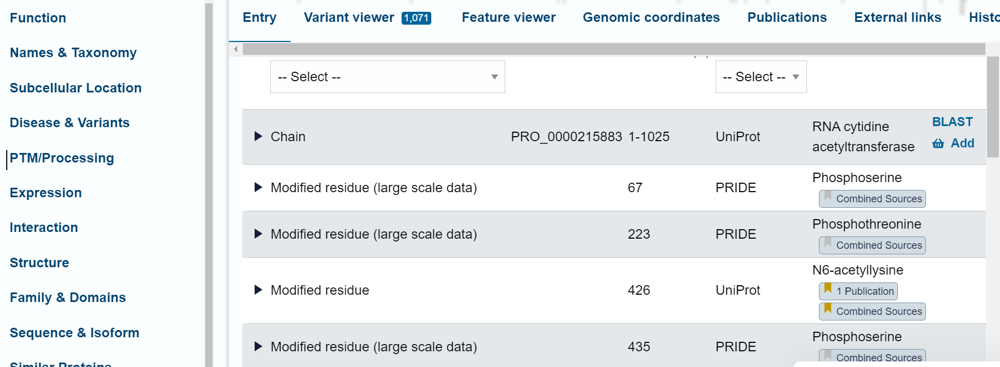
Q8K224 ima modificirane ostanke na mestih 426, 716, 934, 984 in 987. 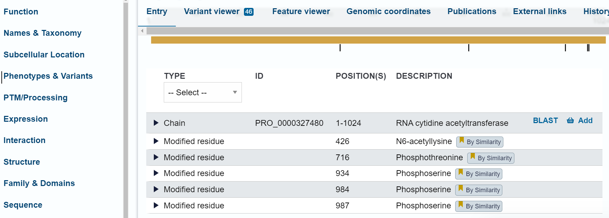
Pri obeh proteinih ostaneta po post-translacijskih modifikacijah ohranjeni dolžini verige od začetnega do končnega ak-ostanka.
Funkcija proteina#
RNA citidin acetiltransferaza katalizira formacijo ac4C (N4-acetidilcitidin) modifikacije na mRNA, 18s rRNA in tRNA.
Katalizira ac4C modifikacije na različnih mRNA in tako izboljšuje translacijo in stabilnost mRNA.
Acetilira lizinske ostanke proteinov (histone, mikrotubule, p53/TP53 in MDM2).
Aktivira telomerazno aktivnost s spodbujanjem transkripcije TERT.
Sodeluje pri regulaciji podvojevanja centrosoma.
Sorodni proteini (poravnava, filogenetsko drevo)#
Ak-zaporedje metagenoma sem vstavila v blastp in iskala po zbirki nr. Izbrala sem prvih 10 zaporedij, jih prenesla v FASTA formatu (aligned sequences) in naredila poravnavo v Clustal Omega.
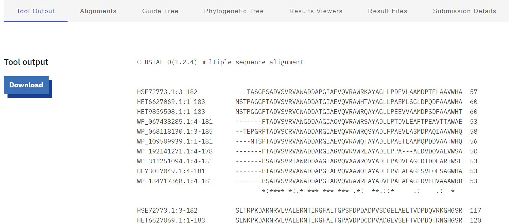
Podatke za filogenetsko drevo iz Clustal Omega sem vstavila v phylo.io in dobila izrisano filogenetsko drevo za izbranih 10 proteinov. 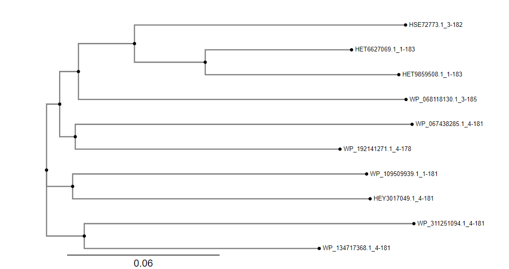
Ker imajo izbrani proteini skupnega prednika, so homologni.
Večina izbranih proteinov je ortologov, ker izhajajo iz različnih organizmov, za HET6627069.1, HSE72773.1, in HET9859508.1 pa ne piše specifično, iz katerega organizma so (Nocardioidaceae bacterium). Če so iz istega organizma, bi bili torej paralogi, sicer pa ortologi.
Ohranjene regije#
Za iskanje ohranjenih regij sem izbrala vsa ak-zaporedja (prvih 100 zaporedij), dobljena pri iskanju ak-zaporedja metagenoma v blastp po zbirki nr in jih prenesla v FASTA formatu (aligned sequences).
Z izbranimi zaporedji sem naredila poravnavo v COBALT-u in rezultate prenesla v obliki Fasta plus gaps. 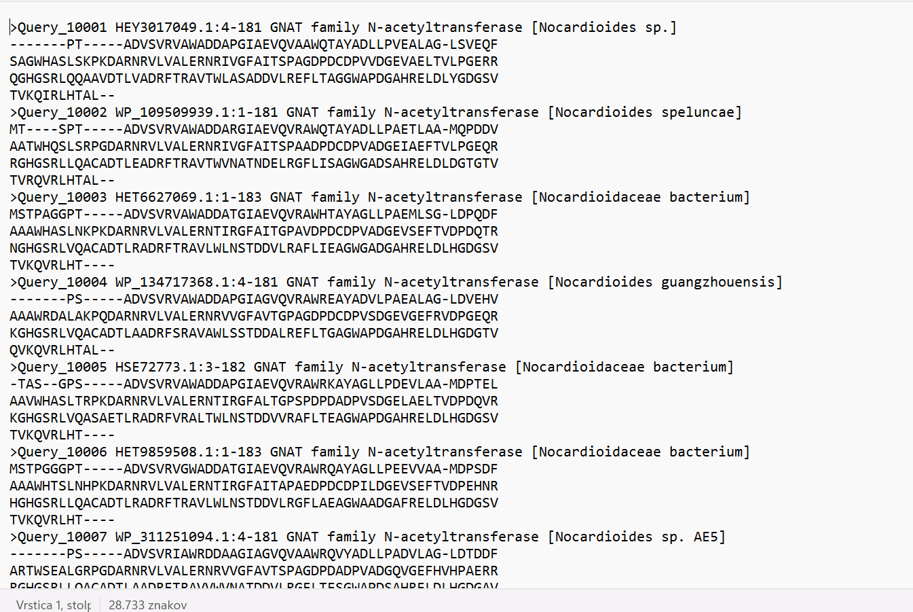
Dobljene rezultate sem nato vstavila v WebLogo (pri tem sem pri dodatnih opcijah označila multiline logo) in dobila logo izbranih zaporedij. 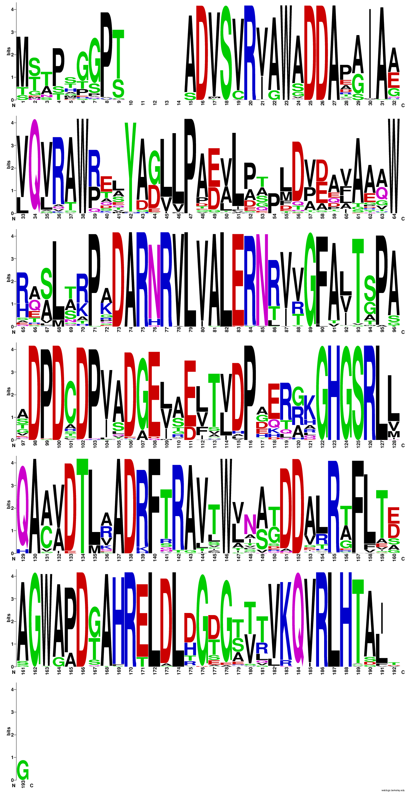
Podobni evkariontski proteini#
Za iskanje podobnih evkariontskih proteinov sem metagenomsko zaporedje vstavila v blastp in pod organizem vstavila ‘Eukaryote’, a pri iskanju nisem dobila zadetkov.
Zato sem poskusila še z najbolj podobnim proteinom metagenomskega zaporedja, Q9H0A0, s katerim sem tudi določila lastnosti mojega proteina.
Ak-zaporedje sem vstavila v blastp in iskala po zbirki pbd za evkariontske organizme.
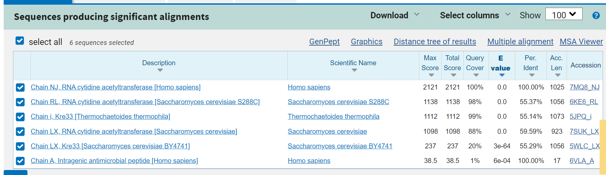
Kot najbolj podoben evkariontski protein sem vzela 5JPQ_i (tj. veriga Kre33, podatek iz uniprota), ker ima največje ujemanje z Q9H0A0.
Potencialna funkcijska povezanost z drugimi proteini, morebitne medproteinske interakcije#
Ak-zaporedje Q9H0A0 sem nato vstavila v string.
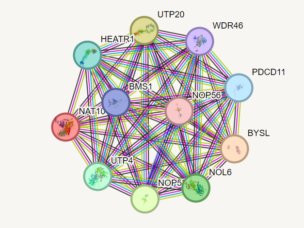 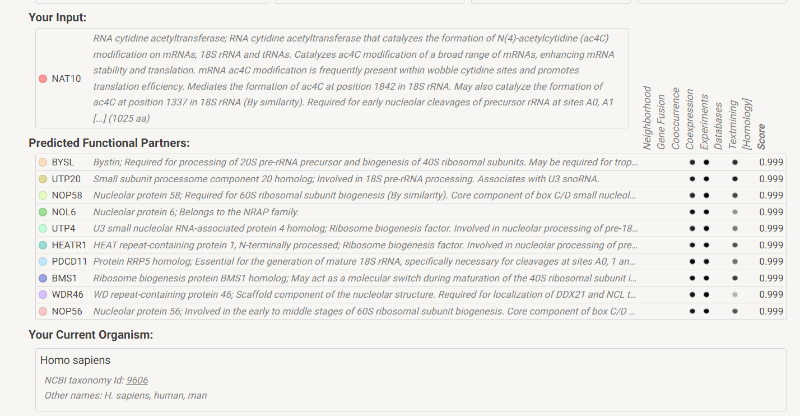
Model strukture#
Ak-zaporedje metagenoma sem vstavila v swiss model in dobila dva različna modela 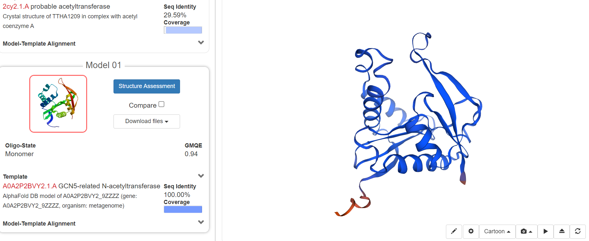 in 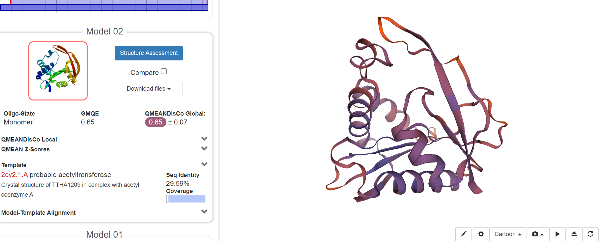
Prav tako sem v swiss model vstavila ak-zaporedje Q9H0A0, s katerim sem naredila superpozicijo v molstarju.
V molstarju sem odprla pdb najbolj podobnega evkariontskega proteina 5JPQ_i, najdenega pri iskanju podovnih evkariontskih proteinov. In sicer sem poravnala verigo i proteina 5JPQ, ki je v molstarju bila označena kot Kre33 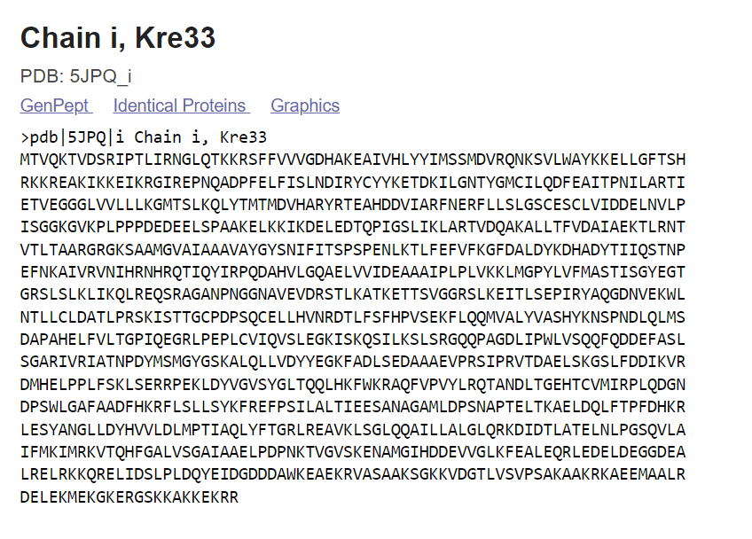 (ostale verige tega proteina sem zbrisala) in naredila superpozicijo z Q9H0A0. Rezultat:
Kot pričakovano, se proteina ne ujemata zelo dobro, saj je bila podobnost med proteinoma pri iskanju z blastp (pri prejšnji točki) zelo nizka.
Strukturo Q9H0A0 je bila že narejena z alpha foldom. 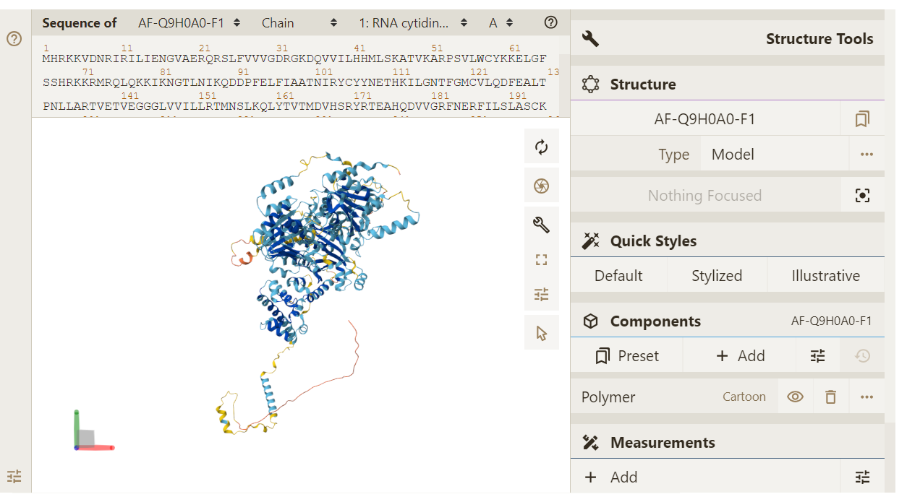
Na koncu sem naredila še superpozicijo strukture Q9H0A0 z modelom, pridobljenim s swiss model in s alpha foldom. 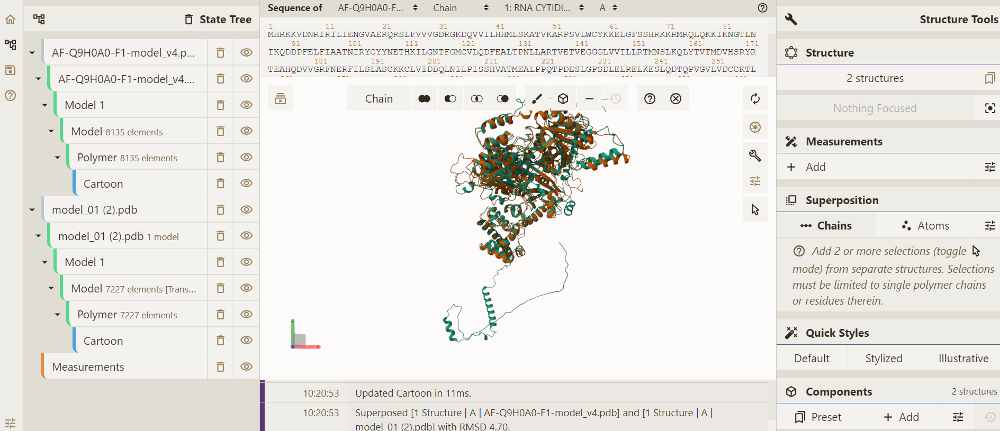